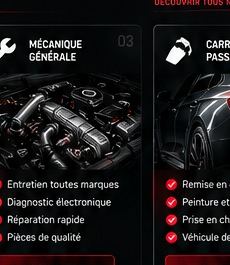

MÉCANIQUE GÉNÉRALE
Entretien et réparation toutes marques.
Entretien et réparation toutes marques avec diagnostic et devis avant intervention.

Un atelier équipé pour l’entretien courant, le diagnostic et les réparations toutes marques.
Entretien et réparation toutes marques.
Recherche de pannes et diagnostic.
Montage & équilibrage à partir de 13 €.
Sécurité et performance.
Huile, filtres, niveaux...
Pièces et main-d'œuvre.